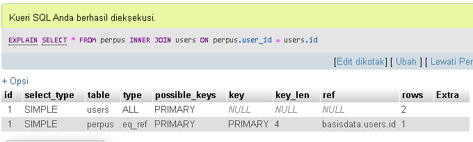

Apa itu sebenarnya evaluation plan ? Evaluation plan ini menetapkan detail evaluasi seperti apa saja
yang akan dievaluasi dan bagaimana nantinya cara mengevaluasinya. Nah, evaluation plan di query pada
DBMS ini berguna agar optimizer dapat memutuskan nantinya evaluasi mana yang akan dipilih.
Evaluation Plan Pada MySQL
Tiap DBMS memiliki cara yang berbeda untuk menampilkan Evaluation Plan. Saya akan mengambil
contoh evaluation plan di MySQL. Berikut keterangannya : sebagai contoh saya menggunakan database basisdata
dengan 4 table yaitu buku, perpus, user dan waktu
- Siapkan Databasenya terlebih dahulu, lengkap dengan table dan isinya
- Buat sebuah perintah query yang akan dilakukan pada table tersebut
- Tambahkan EXPLAIN sebelum perintah query.
Dibawah ini adalah contoh penggunaan EXPLAIN untuk untuk Evaluation Plan di MySQL. Sebelumnya saya telah membuat
database dengan nama basisdata dengan 4 table, namun hanya 2 yang akan digunakan dalam contoh kali ini.

Hasilnya tertera pada table diatas.
- id ditampilkan nomor urut dari query SELECT yang dimiliki baris ini. Karena query di atas ini
tidak berisi subkueri ataupun gabungan, maka id untuk kedua baris adalah 1.
- select_type berisi tentang apakah query tersebut berisi subkueri atau gabungan. Hasil explain
gambar itu muncul SIMPLE yang berarti tidak bergabung pada subkueri atau gabungan.
- table menjelaskan nama tabel yang digunakan dalam query.
- type menjelaskan bagaimana tabel itu diakses/bergabung. type ALL berarti memindai seluruh tabel,
selanjutnya eq_ref merupakan tipe gabungan (JOIN type)
- possible_keys hanya menjelaskan jika tabel ini memiliki indeks berguna untuk mencari baris, indeks
dapat dipilih. Untuk hasil gambar di atas, dijelaskan bahwa keduanya memiliki indeks PRIMARY.
- key menjelaskan indeks sebenarnya yang digunakan MySQL untuk mencari
- key_len menunjukkan panjang kunci yang digunakan MySQL, di gambar atas menjelaskan bahwa bagian
PRIMARY memiliki 4 byte. Sebagai menunjukkan indeks id berarti INT = 4 bytes.
- ref merupakan kolom yang dibandingkan dengan indeks yang diberi nama di kolom kunci
- rows menunjukkan berapa data yang diambil dalam tabel, tergantung dengan query apa yang dipakai
- Extra menunjukkan informasi tambahan tentang query processing, namun dalam gambar diatas hanya menunjukkan
NULL, yang berarti tidak ada.